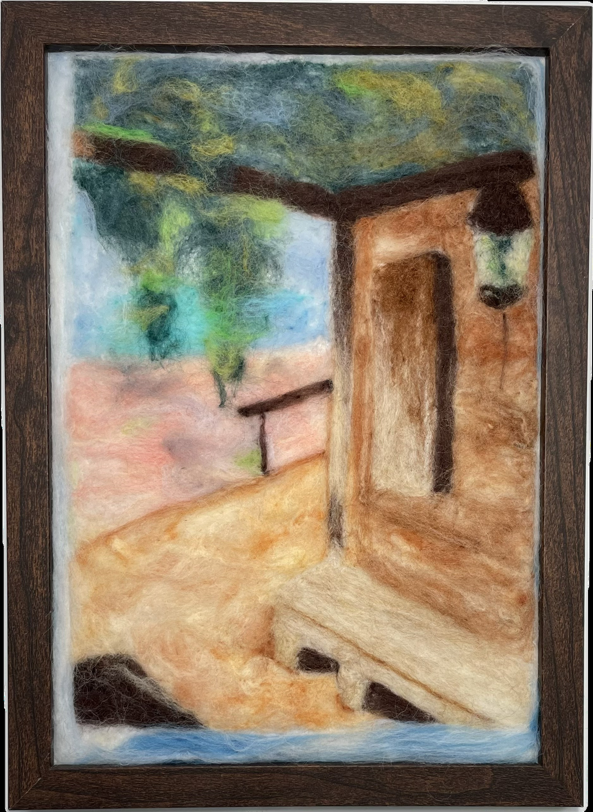

作品名稱：沐心亭
作者姓名：劉芷聿
作品主題：沐心亭
作品敘述：這是在刺沐心亭，視角是看向操場的方向。本來牌子上有寫沐心亭，但是刺了有可能搶了這幅畫其他細節的風采，或是直接毀掉這幅畫，多方考慮下便不再費心做此一舉，雖然最後也沒有任何細節可言。BTW我有刺邊框。
This is at the Mu Xin Pavilion, and the perspective is facing the direction of the playground. Originally, the sign had the name "Mu Xin Pavilion" written on it, but after being tattooed, it might have either overshadowed the details of the painting or directly ruined it. After much consideration, I decided not to bother with making this move. In the end, there were no details to speak of. BTW, I tattooed the border.